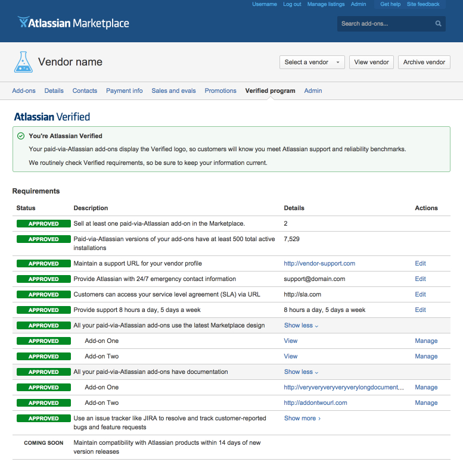

The Atlassian Verified dashboard
I created a dashboard for add-on vendors using Atlassian User Interface, or AUI. I coded high-fidelity mockups, and solicited feedback from designers and developers.
This dashboard conveys vendor status in relationship to Verified program benchmarks. Atlassian Verified vendors uphold Atlassian standards for add-on support, Marketplace traction, and product compatibility.
Goals
Make individual requirement statuses obvious, so vendors can use this dashboard as a checklist on the way to becoming Verified.
Wherever possible, provide options to update or modify information to minimize friction.
On hover, show contextual tooltips that explain requirements and tips.
Design
Not pictured here are tooltips for each field that describe the requirements in more detail, so vendors have context and information without needing to leave the page.

Lessons Learned
The dashboard has been a success. I’ve implemented changes in dashboard design, email notifications, and documentation in response to direct feedback from support and vendors. In retrospect, I should have initiated this feedback loop earlier on.
Quantitative assessments have been difficult to make since vendors are a relatively small group with specialized use cases. Metrics don’t make a strong case for responsive design and this dashboard isn’t optimized for mobile, but I’d like to explore this in the future.
Things I would have done differently:
- Always make sure all stakeholders are calibrated in their goals and expectations. Overcommunication is better than undercommunication. Every stakeholder should share the same definition of “success.”
- Conduct user research with vendors before, during, and after to gauge success qualitatively.
- Work more directly with support during and after launch. Support insights can help assess if the dashboard is clear to use.
- Define quantitative success metrics before design and implementation.